可下载的 Video Spacetime 参考素材。中文和英文 Prompt 都可以引用此页的 manifest 与素材包。
用户提供的视频只适合在获得授权的情况下使用。示例视频可直接下载；你在实验室自行导入的视频仍只在浏览器内处理。
| 案例 | 视频 | 封面 / 授权 |
|---|---|---|
| 姿态点云 · 17 秒 | pose-study.mp417.45s · 720×900 | posterUser-provided demo; no redistribution license granted |
| 空山基机器人 · 18 秒 | sanky-robot.mp418.08s · 720×960 | posterUser-provided demo; no redistribution license granted |
| 空山基机器人 · 新片段 | sanky-robot-v2.mp418.08s · 720×1280 | posterUser-provided demo; no redistribution license granted |
| 群舞 · 完整视频 | school-dance.mp4184.90s · 960×540 | posterUser-provided demo; no redistribution license granted |
| 群舞 · 30 秒片段 | school-dance-30s.mp430.00s · 960×540 | posterUser-provided demo; no redistribution license granted |
| GENER8ION · STORM | gener8ion.mp430.00s · 640×360 | posterOfficial YouTube source · local-only reference |
| 漫步水豚 | capybara.mp44.00s · 640×640 | posterCC BY 3.0 |
| 蓝金之间 | reef.mp44.00s · 640×640 | posterCC BY-SA 3.0 |
| 金色游弋 | goldfish.mp44.00s · 640×640 | posterCC BY-SA 4.0 |
| 涉谷 · 人潮 | crossing.mp44.00s · 640×360 | posterCC BY-SA 3.0 |
| 弹跳轨迹 | bounce.mp44.00s · 768×480 | posterSee license file |
| 环形运动 | orbit.mp44.00s · 768×480 | posterSee license file |
| 摆动的节奏 | wave.mp44.00s · 768×480 | posterSee license file |
{kind=link}
{kind=link}
{kind=link}
{kind=link}
{kind=link}
{kind=link}
{kind=link}
{kind=link}
{kind=link}
{kind=link}
{kind=link}
{kind=link}
{kind=link}